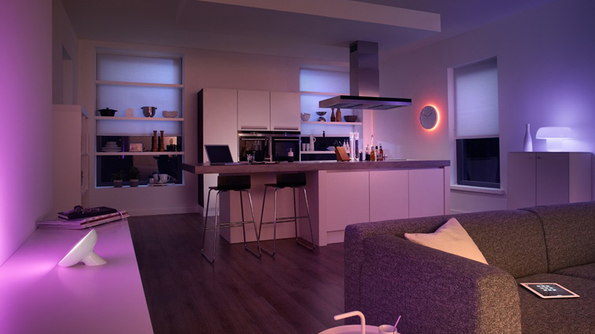
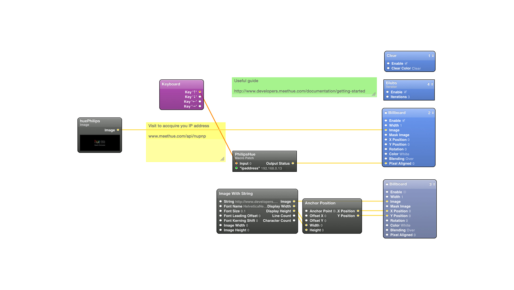

Philips hue
Combines brilliant LED light with intuitive technology.
IMMERSE
What did we Create?
I love Philips Hue lights, the simplicy to control an enviroment via light. Forget instagram filters, control the filter in the real world. When shooting Augemented Reality its very cool to dynamically change your lighting dependant on which mode you have selection, in it self a very useful user experience.


SOCIAL
What did we Create?
We used a graphic programming language Quartz Composer to access Philips office Hue API. With this access we allow you to create application using Quartz Composer and xCode.
SOCIAL
We used a graphic programming language Quartz Composer to access Philips office Hue API. With this access we allow you to create application using Quartz Composer and xCode.
My Philips Hue lights for Quartz Composer source code. https://t.co/2ZAVR61eOL http://t.co/TA2jYU6tH4
— Jonathan Hammond (@jonathanhammond) January 13, 2015@jonathanhammond Errrrrmmmm Hey mr DJ! This looks amazing. is that checked pattern made of LightStrips?? #huelovesmusic #dj
— Meet hue (@tweethue) November 26, 2014My Philips Hue lights for Quartz Composer source code. https://t.co/2ZAVR61eOL http://t.co/TA2jYU6tH4
— Jonathan Hammond (@jonathanhammond) January 13, 2015@jonathanhammond Errrrrmmmm Hey mr DJ! This looks amazing. is that checked pattern made of LightStrips?? #huelovesmusic #dj
— Meet hue (@tweethue) November 26, 2014SOCIAL
Instragram images I shot. #philipshue
No filters in these images. Philips Hue and my Quartz Composer Framework communicating
